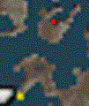

| バラムガーデン ～イデアの家 ケアルガ |
イデアについての放送が入る イデアと会話 リノアの様子を見に行く ラグナ編へ 訓練施設の左のマップに月刊武器７月号が落ちている イデアの家のイデアの部屋にティンバーマニアックスがある |
||||||||||||||||
| トラビア渓谷 | ルブルムドラゴンとバトル！ スコール編へ ＶＳルブルムドラゴン 冷属性の魔法やグラビデが有効 |
||||||||||||||||
| イデアの家 ～白いＳｅｅＤの船 ～Ｆ．Ｈ． ホーリー |
イデアから魔女の手紙をもらう 白いＳｅｅＤの船のリーダーと話す 保健室orＦ．Ｈ．に行く  白いＳｅｅＤの船は↑の赤い所に停泊しています となりのカノジョの持っている状態でゾーンに話しかけると選択肢が出る 「タダでやる」→リネームカード＋シヴァのカード入手 「２５５００ギルで売る」→２５５００ギル入手 操舵室にティンバーマニアックスがある ここから先一定期間だけイデアが仲間になる |
||||||||||||||||
| 大塩湖 メテオ サンダガ |
途中でアバドンとバトル！ 見えないハシゴをのぼる ラグナ編へ 右にある大きな骨から上にいける 上に行ってすぐ右の行き止まりにＤＰ：メテオがある ＶＳアバドン アンデッドタイプなのでレイズで一撃です フレアがドローできるならできるだけドローしておきましょう |
||||||||||||||||
| ルナティックパンドラ研究所 デス フレア（隠し） |
研究所内で働かされる オダインと話す リフターに乗って別の研究所へ パネルを調べてロックを解除 エルオーネを救出 スコール編へ 研究所の外に出てから再び研究所内に入るとオダインがいた部屋に月刊武器創刊号が落ちている イスに座って上に行き、着いたフロアの左上にＤＰ：フレアがある |
||||||||||||||||
| エスタ ブリザド クエイク ケアルガ トルネド ダブル フレア（隠し） |
オダインと会う 外に出てルナゲートに向かう エスタ・エアステーション前のＴ字路にいる大統領補佐官と話した後大統領官邸に戻ると、 応接室の前に大統領秘書が現れる。 話しかけると雑誌の束を残していくのでこれを調べるとオカルトファンⅣが入手できる ルナゲートに行く前にティアーズポイントでソロモンの指輪を拾っておきましょう（ＤＰ：リフレクの右） |
||||||||||||||||
| ルナゲート | パーティを２つに分ける | ||||||||||||||||
| エスタ | ゼルチームがオダインと話す ルナティックパンドラとの接触ポイントへ 作戦失敗 スコールチームに切り替わる
※２ 赤いスイッチを押して近くの岩を動かしている ※３ 古い鍵２を拾っている ※４ 青いスイッチで遠くの岩を転がしている ※５ 扉を開けている ※６ 古い鍵１を拾っている メカ出現地点１ ①から侵入した時 メカ出現地点２ ②、③から侵入した時 ルナティックパンドラ通過中にショッピングモールに行き、「Chery's Store」を選ぶとロゼッタ石がもらえる |
||||||||||||||||
| ルナサイドベース メテオ（隠し） メルトン（隠し） |
リノアを医務室に連れて行く エルオーネと話す 制御室のパネルで月の様子を見る リノアを追う 制御室から脱出パッドに入る 宇宙へ出る ピエットからアレクサンダーのカード、エルオーネからラグナのカードを取りましょう エルオーネの部屋の左上の隅にＤＰ：メテオがある リフトで降りた所のセーブポイントがあるマップの左の方にＤＰ：メルトンがある |
||||||||||||||||
| 飛空艇ラグナロク レイズ アレイズ（隠し） ケアルラ |
プロパゲイターをすべて倒す リフトでコクピットに行く 地上へ戻る 客席で仲間と合流
|
||||||||||||||||
| エスタ国立魔女記念館 ストップ |
リノアを奪い返す | ||||||||||||||||
| イデアの家 | 花畑でリノアと話す | ||||||||||||||||
| エスタ | エスタ大統領と話す
ルナティックパンドラに入ってサイファーとバトルするともう戻れないので、 サブイベントなどを終わらせてからルナティックパンドラに行きましょう |
||||||||||||||||
| ルナティックパンドラ 前と同じ＋ブレイク |
飛空艇で突入！ 雷神＋風神とバトル！ エレベータ１で降りた先で機動兵器８型ＢＩＳとバトル！ サイファーとバトル！ ＤＩＳＣ３終了 ＶＳ雷神＋風神 ブラインやスリプルが有効です ＶＳ機動兵器８型ＢＩＳ＋支援兵器Ｌ型＋Ｒ型 支援兵器Ｌ型からはガードアップ、Ｒ型からはパワーアップが盗めます 合体している時に攻撃するとカウンターを受けるので分離中に攻撃しましょう ＶＳサイファー 乱入型ＧＦ：オーディンを持っているとイベントがあります オーラがドローできるならドローして特殊攻撃で攻撃しましょう |
||||||||||||||||